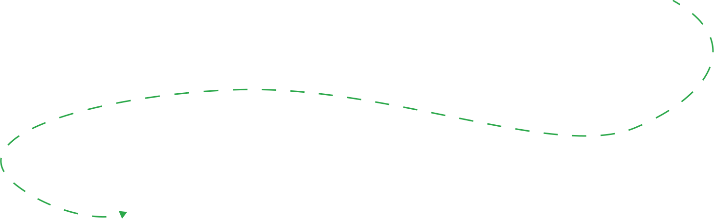

Сломался пурифайер? Нужна замена фильтров? Или просто хотите взять оборудование в аренду без лишних хлопот? Обратитесь к тем, кто знает о пурифайерах всё! Более десяти лет наша компания оказывает полный спектр услуг по обслуживанию, ремонту и аренде пурифайеров в Екатеринбурге. За это время мы помогли сотням клиентов быстро восстановить работу оборудования и обеспечить их доступом к чистой питьевой воде.
Оставить заявкуПоддержка пурифайера в исправном рабочем состоянии влияет на качество потребляемой вами воды. Мы предлагаем полный спектр услуг, чтобы ваш аппарат всегда работал без сбоев.
Без регулярной чистки и дезинфекции в пурифайере могут скапливаться бактерии и вредные примеси. Техобслуживание устраняет эти риски, продлевает срок службы устройства и обеспечивает стабильное качество воды. Предлагаем комплексную профилактику: полную дезинфекцию и чистку внутренних элементов.
Если ваш пурифайер работает нестабильно или вышел из строя полностью, не переживайте — мы разберёмся. Наши мастера проведут диагностику, определят причину. Будь то небольшой сбой или серьезная неисправность, наши специалисты быстро устранят проблему
Правильная установка пурифайера — залог его длительной и надёжной работы. Мы выполним монтаж любой сложности, включая установку с подключением к системе водоснабжения. При необходимости — аккуратно демонтируем старый аппарат без повреждений оборудования и коммуникаций.
Если не хотите покупать пурифайер – возьмите его в аренду. Удобно для офиса, мероприятий или временных нужд. Поможем подобрать модель под ваши задачи. Вы получите готовый к использованию кулер без больших затрат.
Мы работаем в Екатеринбурге и Свердловской области, обслуживая пурифайеры уже более 10 лет. Главная цель нашей работы — обеспечить вас стабильным доступом к качественной и безопасной питьевой воде. И нам это удаётся благодаря собственной команде опытных мастеров и широкому выбору моделей пурифайеров для аренды.
Знание конструкции и принципов работы почти всех пурифайеров позволяет нам быстро находить причины поломок и проводить ремонт/обслуживание.
От простой чистки до сложного ремонта или монтажа: мы справимся со всеми задачами.
Для ремонта и обслуживания используем детали из Южной Кореи, которые подтверждены гарантией качества.

Цены соответствуют уровню выполняемых работ (у нас отсутствуют скрытые платежи).
Большинство запчастей и фильтров, как правило, есть на складе.
Уделяем внимание ситуации заказчика, применяя гибкий подход к решению поставленных задач.
Если вы рассматриваете вариант временного использования устройства, обратите внимание на популярные модели

Оставьте заявку прямо сейчас. Мы свяжемся с вами, чтобы обсудить все детали и подобрать лучшее решение.